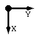

libcheck - Generates and manages the library files which provide complete chemical and geometric descriptions of residues and ligands used in refinement.
The refinement program REFMAC requires a complete geometric description of all monomers (i.e. any molecular entity, e.g. 'protein residue' or 'ligand') in an input structure.
A complete monomer description includes:
The VDW and ionic radii for each atom chemical type are tabulated in a data file $CLIBD_MON/ener_lib.cif and the inter-monomer restraints (e.g. the peptide, sugar and nucleic acid links), are defined in $CLIBD_MON/mon_lib_com.cif.
See the full explanation of monomer descriptions. There are descriptions for commonly occurring residues and ligands in the library files in the directory $CLIBD_MON (see library files) but for any other novel monomer the crystallographer must provide LIBCHECK with their own model coordinates or minimal description from which the program can derive a complete description.
The main use of LIBCHECK is to generate a complete monomer description from a minimal amount of chemical information. The essential minimal information is defined in minimal description.
The output files will give the complete description, a set of coordinates and a sketch of the new monomer.
The user can generate the minimal description required as input to LIBCHECK in the following ways:
Please note that after generating a complete description from a minimal description by any route it is essential to check the complete description carefully since all subsequent refinement will rely on this.
Other important uses of LIBCHECK are:
LIBCHECK was written to be used interactively, but can be used in batch. If used interactively, the program automatically produces a batch command file during dialogue. This feature might be useful when repeating calculations. Keywords with short explanations are printed by the program at the beginning of execution. In batch command files all keywords must be preceded by an underscore (e.g. _DOC).
Do you want to have FILE-DOCUMENT makecif.doc? <N | Y | A>
Default: <N>
The DOC-file contains the protocol of the running of the program. With the DOC-file, the program creates a command (batch) file: libcheck.bat.
After that, the rest of the keywords may be used in any order. _END must be the last keyword.
The available keywords are:
_ANGLE, _DOC, _COOR, _FILE_CIF, _FILE_CSD, _FILE_PDB, _FILE_L, _FILE_L2, _FILE_O, _HFLAG, _IND, _LIST, _NODIST, _MON, _REF, _END
Create a complete description from a minimal description which comes from a distributed library or is provided by the user. Use keywords:
MON, ANGLE, HFLAG, REF, _FILE_L, NODIST
Generate a complete description from a set of coordinates.
This should work if the coordinates are reliable (e.g. derived from an ultra high resolution
structure or energy minimised in some way) or if all hydrogen atoms are defined.
It is recommended to access LIBCHECK via CCP4i SKETCHER to visualise the information in the coordinate file
and to supplement it if necessary. If the user is confident that the input coordinates
are good, the target values for bond lengths, bond angles, torsion angles, and
chiral centres can be extracted from the coordinates, and these will override the values
derived from $CLIBD_MON/ener_lib.cif. (keyword: COOR)
The coordinates can be in PDB, CIF, or CSD format (keywords: FILE_PDB,
FILE_CIF, FILE_CSD). For this option,
the following keywords are associated with coordinates:
FILE_PDB, FILE_CIF, FILE_CSD, COOR,
Check a library entry, compare with complete description. Use keywords:
MON
The output is governed by these keywords:
FILE_OUT, DOC, LIST
Combining two library files:
FILE_L, FILE_L2
Create a complete index of all library entries. This is used for efficient search within the libraries.
IND
| Rotation angle for PostScript picture of monomer around the X axis: |  |
Default: <N>
Coordinates input in mmCIF, CSD or PDB format.
Additional input library file. The distribution files are read by default - only user supplied file needs to be specified with this keyword.
Combine the library file <filename> with the file specified by FILE_L. The program will only perform the file merging if this option is present.
Overrides the default output file names so
Default: <Y>
Default: <N>
Default: <M>
Controls output to the log file.
[compulsory if specific monomer is to be identified]
The input <monomer> name is case sensitive, and must match the library name exactly. For the indicated monomer output
If <monomer> is * a list of all monomers in the library is output to the log file.
Default: <N>
Default: <Y>
E_total = E_bond + E_angle + E_tors + E_vdw + E_hb
E_bond = sum ( Kb * (Bobs -Bidl)**2 )
E_angle = sum ( Ka * (ANGLEobs -ANGLEidl)**2)
E_tors = sum ( Kt * (PHIobs -PHIidl)**2 )
E_vdw = Lennard-Jones 6-12 potential.
where Ka, Kb and Kt are force field constants.
This must be the last keyword.
This will generate a set of coordinates with ideal bonds, angles, chiral centres and planes. A different idealisation procedure is done in REFMAC.
When checking monomer descriptions, LIBCHECK first of all checks the presence of the description of the specific monomer in the library entry.
+---------------------------------------+
! Look up the name in the library entry !
! Is it in the library entry ? !
+---------------------------------------+
! !
no ! ! yes
v v
+---------------+ +----------------------+
! Global search ! yes ! Minimal description !
! matching ? !--->----! available? !
+---------------+ +----------------------+
! ! !
no ! ! yes ! no
! ! v
v v !
! ! !
! ! !
+---------------------------------+ v
! create new complete description !
+---------------------------------+ !
! !
! !
v v
+-----------------------------+
! Create coordinate file !
! Refinement !
! Create PostScript file !
+-----------------------------+
The program will create a complete description and write it to the output file. It will generate a new set of coordinates and create a PostScript file with a picture of new monomer.
This is the procedure
LIBCHECK will automatically read the distributed monomer library files unless the keyword NODIST is used. The distributed files are listed in Introduction to monomer libraries.
LIBCHECK can optionally read
# -------------------------------- libcheck <<stop # -------------------------------- # first line : "_DOC <N>,Y,A " # N - means without DOC-file: "libcheck.doc" # Y - create new file or rewrite if it is old file # A - means to keep old contents and add new information # _DOC y # # # Keywords: # _MON j1 _FILE_L j1min.lib _file_o j1new _END stop
data_comp_list loop_ _chem_comp.id _chem_comp.name _chem_comp.group _chem_comp.desc_level j1 'j1' 'non-polymer' M # data_comp_j1 # loop_ _chem_comp_atom.comp_id _chem_comp_atom.atom_id _chem_comp_atom.type_symbol j1 P P j1 OPP O j1 O1P O j1 O2P O j1 O5* O j1 N1 N j1 C6 C j1 C2 C j1 O2 O j1 N3 N j1 C4 C j1 O4 O j1 C5 C j1 C5A C j1 C2* C j1 C5* C j1 C4* C j1 O4* O j1 C1* C j1 C3* C j1 O3* O loop_ _chem_comp_bond.comp_id _chem_comp_bond.atom_id_1 _chem_comp_bond.atom_id_2 _chem_comp_bond.type j1 P OPP single j1 P O1P double j1 P O2P single j1 P O5* single j1 O5* C5* single j1 N1 C6 single j1 N1 C2 single j1 N1 C1* single j1 C6 C5 double j1 C2 O2 double j1 C2 N3 single j1 N3 C4 single j1 C4 O4 double j1 C4 C5 single j1 C5 C5A single j1 C2* C1* single j1 C2* C3* single j1 C5* C4* single j1 C4* O4* single j1 C4* C3* single j1 O4* C1* single j1 C3* O3* single loop_ _chem_comp_chir.comp_id _chem_comp_chir.id _chem_comp_chir.atom_id_centre _chem_comp_chir.atom_id_1 _chem_comp_chir.atom_id_2 _chem_comp_chir.atom_id_3 _chem_comp_chir.volume_sign j1 chir_01 C4* C5* O4* C3* positiv
data_comp_list loop_ _chem_comp.id _chem_comp.three_letter_code _chem_comp.name _chem_comp.group _chem_comp.number_atoms_all _chem_comp.number_atoms_nh _chem_comp.desc_level j1 j1 'j1 ' non-polymer 36 21 . # # --- DESCRIPTION OF MONOMERS --- # data_comp_j1 # loop_ _chem_comp_atom.comp_id _chem_comp_atom.atom_id _chem_comp_atom.type_symbol _chem_comp_atom.type_energy _chem_comp_atom.partial_charge j1 O4 O O 0.000 j1 C4 C CR6 0.000 j1 N3 N NR16 0.000 j1 HN3 H HNR6 0.000 j1 C2 C CR6 0.000 j1 O2 O O 0.000 j1 C5 C CR6 0.000 j1 C5A C CH3 0.000 j1 H5A3 H HCH3 0.000 j1 H5A2 H HCH3 0.000 j1 H5A1 H HCH3 0.000 j1 C6 C CR16 0.000 j1 H6 H HCR6 0.000 j1 N1 N NR6 0.000 j1 C1* C CH1 0.000 j1 H1* H HCH1 0.000 j1 C2* C CH2 0.000 j1 H2*2 H HCH2 0.000 j1 H2*1 H HCH2 0.000 j1 O4* O O2 0.000 j1 C4* C CH1 0.000 j1 H4* H HCH1 0.000 j1 C3* C CH1 0.000 j1 H3* H HCH1 0.000 j1 O3* O OH1 0.000 j1 HO3* H HOH1 0.000 j1 C5* C CH2 0.000 j1 H5*1 H HCH2 0.000 j1 H5*2 H HCH2 0.000 j1 O5* O O2 0.000 j1 P P P 0.000 j1 O1P O OP 0.000 j1 O2P O OH1 0.000 j1 HO2P H HOH1 0.000 j1 OPP O OH1 0.000 j1 HOPP H HOH1 0.000 loop_ _chem_comp_tree.comp_id _chem_comp_tree.atom_id _chem_comp_tree.atom_back _chem_comp_tree.atom_forward _chem_comp_tree.connect_type j1 O4 n/a C4 START j1 C4 O4 C5 . j1 N3 C4 C2 . j1 HN3 N3 . . j1 C2 N3 O2 . j1 O2 C2 . . j1 C5 C4 C6 . j1 C5A C5 H5A1 . j1 H5A3 C5A . . j1 H5A2 C5A . . j1 H5A1 C5A . . j1 C6 C5 N1 . j1 H6 C6 . . j1 N1 C6 C1* . j1 C1* N1 O4* . j1 H1* C1* . . j1 C2* C1* H2*1 . j1 H2*2 C2* . . j1 H2*1 C2* . . j1 O4* C1* C4* . j1 C4* O4* C5* . j1 H4* C4* . . j1 C3* C4* O3* . j1 H3* C3* . . j1 O3* C3* HO3* . j1 HO3* O3* . . j1 C5* C4* O5* . j1 H5*1 C5* . . j1 H5*2 C5* . . j1 O5* C5* P . j1 P O5* OPP . j1 O1P P . . j1 O2P P HO2P . j1 HO2P O2P . . j1 OPP P HOPP . j1 HOPP OPP . END j1 N1 C2 . ADD j1 C2* C3* . ADD loop_ _chem_comp_bond.comp_id _chem_comp_bond.atom_id_1 _chem_comp_bond.atom_id_2 _chem_comp_bond.type _chem_comp_bond.value_dist _chem_comp_bond.value_dist_esd j1 OPP P single 1.699 0.020 j1 O1P P double 1.610 0.020 j1 O2P P single 1.699 0.020 j1 P O5* single 1.610 0.020 j1 O5* C5* single 1.426 0.020 j1 N1 C6 single 1.337 0.020 j1 N1 C2 single 1.350 0.020 j1 C1* N1 single 1.465 0.020 j1 C6 C5 double 1.390 0.020 j1 O2 C2 double 1.330 0.020 j1 C2 N3 single 1.337 0.020 j1 N3 C4 single 1.337 0.020 j1 C4 O4 double 1.330 0.020 j1 C5 C4 single 1.384 0.020 j1 C5A C5 single 1.506 0.020 j1 C2* C1* single 1.524 0.020 j1 C2* C3* single 1.524 0.020 j1 C5* C4* single 1.524 0.020 j1 C4* O4* single 1.426 0.020 j1 C3* C4* single 1.524 0.020 j1 O4* C1* single 1.426 0.020 j1 O3* C3* single 1.432 0.020 j1 HOPP OPP single 0.967 0.020 j1 HO2P O2P single 0.967 0.020 j1 H6 C6 single 1.083 0.020 j1 HN3 N3 single 1.040 0.020 j1 H5A1 C5A single 1.059 0.020 j1 H5A2 C5A single 1.059 0.020 j1 H5A3 C5A single 1.059 0.020 j1 H2*1 C2* single 1.092 0.020 j1 H2*2 C2* single 1.092 0.020 j1 H5*1 C5* single 1.092 0.020 j1 H5*2 C5* single 1.092 0.020 j1 H4* C4* single 1.099 0.020 j1 H1* C1* single 1.099 0.020 j1 H3* C3* single 1.099 0.020 j1 HO3* O3* single 0.967 0.020 loop_ _chem_comp_angle.comp_id _chem_comp_angle.atom_id_1 _chem_comp_angle.atom_id_2 _chem_comp_angle.atom_id_3 _chem_comp_angle.value_angle _chem_comp_angle.value_angle_esd j1 O4 C4 N3 120.000 3.000 j1 O4 C4 C5 120.000 3.000 j1 N3 C4 C5 120.000 3.000 j1 C4 N3 HN3 120.000 3.000 j1 C4 N3 C2 120.000 3.000 j1 HN3 N3 C2 120.000 3.000 j1 N3 C2 O2 120.000 3.000 j1 N3 C2 N1 120.000 3.000 j1 O2 C2 N1 120.000 3.000 j1 C4 C5 C5A 120.000 3.000 j1 C4 C5 C6 120.000 3.000 j1 C5A C5 C6 120.000 3.000 j1 C5 C5A H5A3 109.470 3.000 j1 C5 C5A H5A2 109.470 3.000 j1 C5 C5A H5A1 109.470 3.000 j1 H5A3 C5A H5A2 109.470 3.000 j1 H5A3 C5A H5A1 109.470 3.000 j1 H5A2 C5A H5A1 109.470 3.000 j1 C5 C6 H6 120.000 3.000 j1 C5 C6 N1 120.000 3.000 j1 H6 C6 N1 120.000 3.000 j1 C6 N1 C1* 120.000 3.000 j1 C6 N1 C2 120.000 3.000 j1 C1* N1 C2 120.000 3.000 j1 N1 C1* H1* 109.470 3.000 j1 N1 C1* C2* 109.470 3.000 j1 N1 C1* O4* 109.470 3.000 j1 H1* C1* C2* 108.340 3.000 j1 H1* C1* O4* 109.470 3.000 j1 C2* C1* O4* 109.470 3.000 j1 C1* C2* H2*2 109.470 3.000 j1 C1* C2* H2*1 109.470 3.000 j1 C1* C2* C3* 111.000 3.000 j1 H2*2 C2* H2*1 107.900 3.000 j1 H2*2 C2* C3* 109.470 3.000 j1 H2*1 C2* C3* 109.470 3.000 j1 C1* O4* C4* 111.800 3.000 j1 O4* C4* H4* 109.470 3.000 j1 O4* C4* C3* 109.470 3.000 j1 O4* C4* C5* 109.470 3.000 j1 H4* C4* C3* 108.340 3.000 j1 H4* C4* C5* 108.340 3.000 j1 C3* C4* C5* 111.000 3.000 j1 C4* C3* H3* 108.340 3.000 j1 C4* C3* O3* 109.470 3.000 j1 C4* C3* C2* 111.000 3.000 j1 H3* C3* O3* 109.470 3.000 j1 H3* C3* C2* 108.340 3.000 j1 O3* C3* C2* 109.470 3.000 j1 C3* O3* HO3* 109.470 3.000 j1 C4* C5* H5*1 109.470 3.000 j1 C4* C5* H5*2 109.470 3.000 j1 C4* C5* O5* 109.470 3.000 j1 H5*1 C5* H5*2 107.900 3.000 j1 H5*1 C5* O5* 109.470 3.000 j1 H5*2 C5* O5* 109.470 3.000 j1 C5* O5* P 120.500 3.000 j1 O5* P O1P 108.200 3.000 j1 O5* P O2P 109.500 3.000 j1 O5* P OPP 109.500 3.000 j1 O1P P O2P 109.500 3.000 j1 O1P P OPP 109.500 3.000 j1 O2P P OPP 109.500 3.000 j1 P O2P HO2P 120.000 3.000 j1 P OPP HOPP 120.000 3.000 loop_ _chem_comp_tor.comp_id _chem_comp_tor.id _chem_comp_tor.atom_id_1 _chem_comp_tor.atom_id_2 _chem_comp_tor.atom_id_3 _chem_comp_tor.atom_id_4 _chem_comp_tor.value_angle _chem_comp_tor.value_angle_esd _chem_comp_tor.period j1 CONST_1 O4 C4 N3 C2 180.000 0.000 0 j1 CONST_2 C4 N3 C2 O2 180.000 0.000 0 j1 CONST_3 C4 N3 C2 N1 0.000 0.000 0 j1 CONST_4 O4 C4 C5 C6 180.000 0.000 0 j1 var_1 C4 C5 C5A H5A1 180.000 20.000 1 j1 CONST_5 C4 C5 C6 N1 0.000 0.000 0 j1 CONST_6 C5 C6 N1 C1* 180.000 0.000 0 j1 CONST_7 C5 C6 N1 C2 0.000 0.000 0 j1 var_2 C6 N1 C1* O4* 180.000 20.000 1 j1 var_3 N1 C1* C2* C3* 180.000 20.000 3 j1 var_4 N1 C1* O4* C4* 180.000 20.000 1 j1 var_5 C1* O4* C4* C5* 180.000 20.000 1 j1 var_6 O4* C4* C3* O3* 180.000 20.000 3 j1 var_7 O4* C4* C3* C2* 0.000 20.000 3 j1 var_8 C4* C3* O3* HO3* 180.000 20.000 1 j1 var_9 O4* C4* C5* O5* 180.000 20.000 3 j1 var_10 C4* C5* O5* P 180.000 20.000 1 j1 var_11 C5* O5* P OPP 180.000 20.000 1 j1 var_12 O5* P O2P HO2P 180.000 20.000 1 j1 var_13 O5* P OPP HOPP 180.000 20.000 1 loop_ _chem_comp_chir.comp_id _chem_comp_chir.id _chem_comp_chir.atom_id_centre _chem_comp_chir.atom_id_1 _chem_comp_chir.atom_id_2 _chem_comp_chir.atom_id_3 _chem_comp_chir.volume_sign j1 chir_01 C4* C5* O4* C3* positiv j1 chir_02 C1* N1 C2* O4* positiv j1 chir_03 C3* C2* C4* O3* positiv loop_ _chem_comp_plane_atom.comp_id _chem_comp_plane_atom.plane_id _chem_comp_plane_atom.atom_id _chem_comp_plane_atom.dist_esd j1 plan-1 N1 0.020 j1 plan-1 C6 0.020 j1 plan-1 C2 0.020 j1 plan-1 C1* 0.020 j1 plan-1 N3 0.020 j1 plan-1 C4 0.020 j1 plan-1 C5 0.020 j1 plan-1 O4 0.020 j1 plan-1 H6 0.020 j1 plan-1 HN3 0.020
A.A.Vagin, alexei@ysbl.york.ac.uk
Garib Murshudov, Eleanor Dodson, Maria Turkenburg, Liz Potterton, Kim Henrick